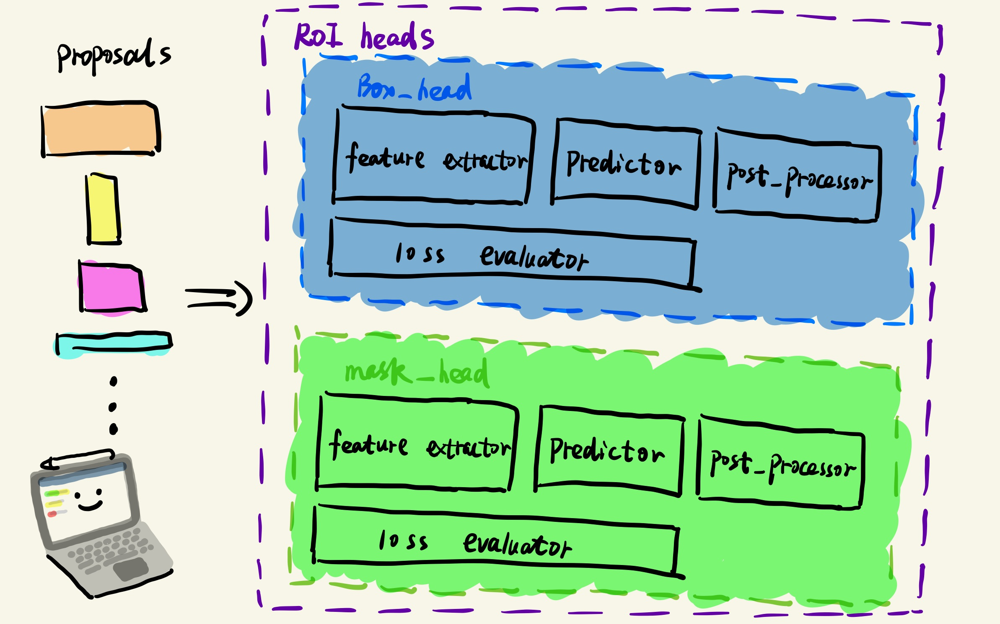

前言
本篇将介绍build_roi_box_head()函数，这个函数是在your_project/maskrcnn_benchmark/modeling/roi_heads/box_head/box_head.py文件中
def build_roi_box_head(cfg, in_channels):
"""
Constructs a new box head.
By default, uses ROIBoxHead, but if it turns out not to be enough, just register a new class
and make it a parameter in the config
"""
# 主要返回一个ROIBoxHead类对象
return ROIBoxHead(cfg, in_channels)一、ROIBoxHead类
从代码可知，build_roi_box_head()主要是返回一个ROIBoxHead类对象，看来我们主要需要了解的目标就是这个ROIBoxHead类了，这个类也是在your_project/maskrcnn_benchmark/modeling/roi_heads/box_head/box_head.py文件中，我们首先看一下__init__()函数:
class ROIBoxHead(torch.nn.Module):
"""
Generic Box Head class.
"""
def __init__(self, cfg, in_channels):
super(ROIBoxHead, self).__init__()
# ROI层中的特征提取器（先进行ROI Align，后续有没有特征提取操作看具体head的方法）
# 因为RPN提取的Proposals大小都不太一样，为了使得这些Proposals的图片特征大小一样，
# 需要进行ROI Align操作得到大小一样的特征。
self.feature_extractor = make_roi_box_feature_extractor(cfg, in_channels)
# ROI层中的边框预测类（用于类别的分类和box的回归~）
self.predictor = make_roi_box_predictor(
cfg, self.feature_extractor.out_channels)
# 下面这两个和RPN中的很相像
# ROI层中的后处理类（inference过程 进行NMS操作和box解码等操作）
self.post_processor = make_roi_box_post_processor(cfg)
# 训练过程计算loss
self.loss_evaluator = make_roi_box_loss_evaluator(cfg)接着我们看一下该类的forward()函数，了解该类的一个处理流程：
def forward(self, features, proposals, targets=None):
"""
Arguments:
features (list[Tensor]): feature-maps from possibly several levels
proposals (list[BoxList]): proposal boxes
targets (list[BoxList], optional): the ground-truth targets.
Returns:
x (Tensor): the result of the feature extractor
proposals (list[BoxList]): during training, the subsampled proposals
are returned. During testing, the predicted boxlists are returned
losses (dict[Tensor]): During training, returns the losses for the
head. During testing, returns an empty dict.
x是特征提取器提取的特征
proposals分为两种情况：
1、在训练阶段，这是采样好用于训练的Proposals
2、在测试阶段，这是预测好的boxlists
loss也分两种情况：
1、在训练阶段，这是box_head的模块的loss值。
2、在测试阶段，这是一个空的字典。
"""
if self.training:
# Faster R-CNN subsamples during training the proposals with a fixed
# positive / negative ratio
# 筛选用于训练阶段计算loss的Proposals
with torch.no_grad():
proposals = self.loss_evaluator.subsample(proposals, targets)
# extract features that will be fed to the final classifier. The
# feature_extractor generally corresponds to the pooler + heads
# feature_extractor是用来提取特征传输给最终的分类器
# feature_extractor是由pooler 层 + heads 组成的
x = self.feature_extractor(features, proposals)
# final classifier that converts the features into predictions
# 分类器进行最后的预测
class_logits, box_regression = self.predictor(x)
if not self.training:
# 如果不是训练阶段，则要对预测的结果进行后处理 最后输出检测结果
result = self.post_processor((class_logits, box_regression), proposals)
return x, result, {}
# 计算box的回归loss和类别的分类loss
loss_classifier, loss_box_reg = self.loss_evaluator(
[class_logits], [box_regression]
)
return (
x,
proposals,
dict(loss_classifier=loss_classifier, loss_box_reg=loss_box_reg),
)由ROIBoxHead类可以看出来，主要涉及了四个函数:
- make_roi_box_feature_extractor():包含有ROI Align操作，用来提取size一致的特征。
- make_roi_box_predictor():feature_extractor提取的特征进行类别分类和box的回归。
- make_roi_box_post_processor():如果是inference过程，通过该函数对预测的结果进行筛选，输出最终的检测结果（RPN的RPNPostProcessor类是不是很相似~）
- make_roi_box_loss_evaluator():如果是训练过程，通过该函数对预测的结果筛选出正负样本用于计算box_head模块的loss。
接下来我将一一介绍（整体结构简图如下所示）：

二、make_roi_box_feature_extractor()
该函数在your_project/maskrcnn_benchmark/modeling/roi_heads/box_head/roi_box_feature_extractors.py文件中，我们来看看相关代码：
def make_roi_box_feature_extractor(cfg, in_channels):
# 使用注册器获取该ROI_BOX_FEATURE_EXTRACTORS模块的对象
# 对应的ROI_BOX_FEATURE_EXTRACTORS模块都定义在该函数上面
func = registry.ROI_BOX_FEATURE_EXTRACTORS[
cfg.MODEL.ROI_BOX_HEAD.FEATURE_EXTRACTOR
]
return func(cfg, in_channels)使用注册器来获取参数中定义的feature_extractor，我们在该文件中找到了三种feature_extractor,它们分别是：ResNet50Conv5ROIFeatureExtractor、FPN2MLPFeatureExtractor、FPNXconv1fcFeatureExtractor。如果你自己想要重新定义一个，你也可以按照这些类的结构，重新写一个feature extractor，并给该类注册对应的名称，在参数文件对应位置使用该名称。我接下来对稍微简单一些的FPN2MLPFeatureExtractor类的代码做一个介绍：
# 在注册器中进行注册
@registry.ROI_BOX_FEATURE_EXTRACTORS.register("FPN2MLPFeatureExtractor")
class FPN2MLPFeatureExtractor(nn.Module):
"""
Heads for FPN for classification
"""
def __init__(self, cfg, in_channels):
super(FPN2MLPFeatureExtractor, self).__init__()
# Proposals经过ROI Align之后得到size大小
resolution = cfg.MODEL.ROI_BOX_HEAD.POOLER_RESOLUTION
scales = cfg.MODEL.ROI_BOX_HEAD.POOLER_SCALES
sampling_ratio = cfg.MODEL.ROI_BOX_HEAD.POOLER_SAMPLING_RATIO
# 进行ROI Align操作
pooler = Pooler(
output_size=(resolution, resolution),
scales=scales,
sampling_ratio=sampling_ratio,
)
# ROI Align之后得到的维度
input_size = in_channels * resolution ** 2
# 全连接层的输出维度
representation_size = cfg.MODEL.ROI_BOX_HEAD.MLP_HEAD_DIM
use_gn = cfg.MODEL.ROI_BOX_HEAD.USE_GN
# 定义ROI Align的类变量
self.pooler = pooler
# 定义全连接层的类变量
self.fc6 = make_fc(input_size, representation_size, use_gn)
self.fc7 = make_fc(representation_size, representation_size, use_gn)
# 提取特征之后得到最终的输出维度
self.out_channels = representation_size
# 进行提取特征操作
def forward(self, x, proposals):
# ROI Align操作
x = self.pooler(x, proposals)
# 进行展平 作为全连接层的输出
x = x.view(x.size(0), -1)
# 进行全连接层操作
x = F.relu(self.fc6(x))
x = F.relu(self.fc7(x))
# 返回提取的特征
return x总的来看feature_extractor的相关代码相对还是比较好懂的。
三、 make_roi_box_predictor()
接下来看用作类别分类判断和box回归的roi_box_predictor()函数，这个函数在your_project/maskrcnn_benchmark/modeling/roi_heads/box_head/roi_box_predictors.py文件中：
def make_roi_box_predictor(cfg, in_channels):
func = registry.ROI_BOX_PREDICTOR[cfg.MODEL.ROI_BOX_HEAD.PREDICTOR]
return func(cfg, in_channels)可以看出这个函数和make_roi_box_feature_extractor（）函数基本类似，都是通过注册器获取相关所需的对象，因此我们将重点关注到该函数上方被注册的2个predictor类上：FastRCNNPredictor类和FPNPredictor类，下面就以FastRCNNPredictor类的代码为例，做简要的介绍：
# 对特征先进行池化，再使用边框分类器进行分类和边框回归器进行回归
# 首先在注册器ROI_BOX_PREDICTOR上注册该类
@registry.ROI_BOX_PREDICTOR.register("FastRCNNPredictor")
class FastRCNNPredictor(nn.Module):
def __init__(self, config, in_channels):
super(FastRCNNPredictor, self).__init__()
assert in_channels is not None
# 输入维度
num_inputs = in_channels
# 分类的类别数= 类别数 + 1（背景）
num_classes = config.MODEL.ROI_BOX_HEAD.NUM_CLASSES
# 进行全局平均池化
self.avgpool = nn.AdaptiveAvgPool2d(1)
# 全连接层用于分类
self.cls_score = nn.Linear(num_inputs, num_classes)
num_bbox_reg_classes = 2 if config.MODEL.CLS_AGNOSTIC_BBOX_REG else num_classes
# 全连接层用于box的坐标回归
self.bbox_pred = nn.Linear(num_inputs, num_bbox_reg_classes * 4)
# 类别分类参数初始化
nn.init.normal_(self.cls_score.weight, mean=0, std=0.01)
nn.init.constant_(self.cls_score.bias, 0)
# box回归参数初始化
nn.init.normal_(self.bbox_pred.weight, mean=0, std=0.001)
nn.init.constant_(self.bbox_pred.bias, 0)
# 执行过程
def forward(self, x):
# 平均池化
x = self.avgpool(x)
# 展平
x = x.view(x.size(0), -1)
# 使用全连接层进行分类
cls_logit = self.cls_score(x)
# 使用全连接层进行box回归
bbox_pred = self.bbox_pred(x)
# 返回结果
return cls_logit, bbox_pred总的来看roi_box_predictor相关代码也是比较好懂的，就是正常pytorch写的网络结构代码。
接下来将会介绍 make_roi_box_post_processor()函数，它是在box_head的inference.py文件中，以及make_roi_box_loss_evaluator()函数，它是在box_head的loss.py中，由于这两个部分的内容有些多，所以决定放到下个博客进行介绍：